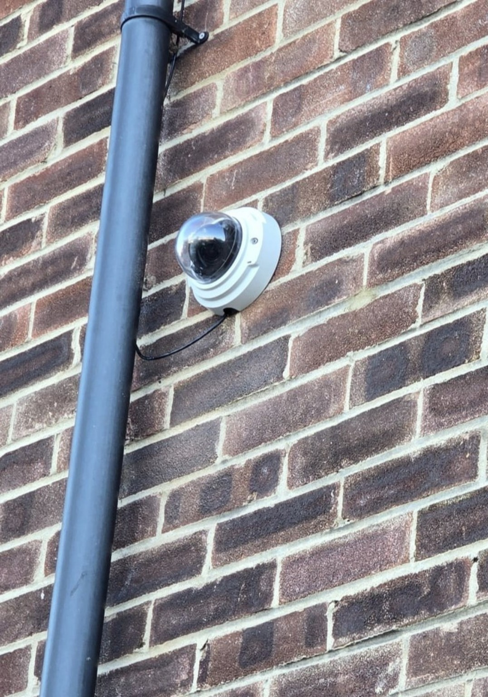

How our cameras work
Motion-triggered recording with clear privacy safeguards.
Find out more →Public information & accountability
Clear, accessible information about our cameras, how footage is handled, and your rights.
Find a Camera
Our purpose
We develop community-based CCTV arrangements intended to support public safety, assist with the investigation of incidents and provide proportionate coverage of appropriate public-facing areas.
How our cameras work →Hosting with USCN
An eligible host contributes a suitable location, power and connectivity. USCN normally provides the camera and its routine maintenance, manages lawful footage requests concerning its system and can assess incident footage without asking the host to search recordings themselves. Hosting is voluntary and camera placement is always subject to privacy and operational assessment.
Key information
Motion-triggered recording with clear privacy safeguards.
Find out more →Routine footage is overwritten within a maximum of 31 days, subject to authorised exceptions.
Find out more →May be available for selected cameras, subject to privacy review and approval.
Find out more →Our approved policies, privacy assessments and accountability arrangements.
Find out more →